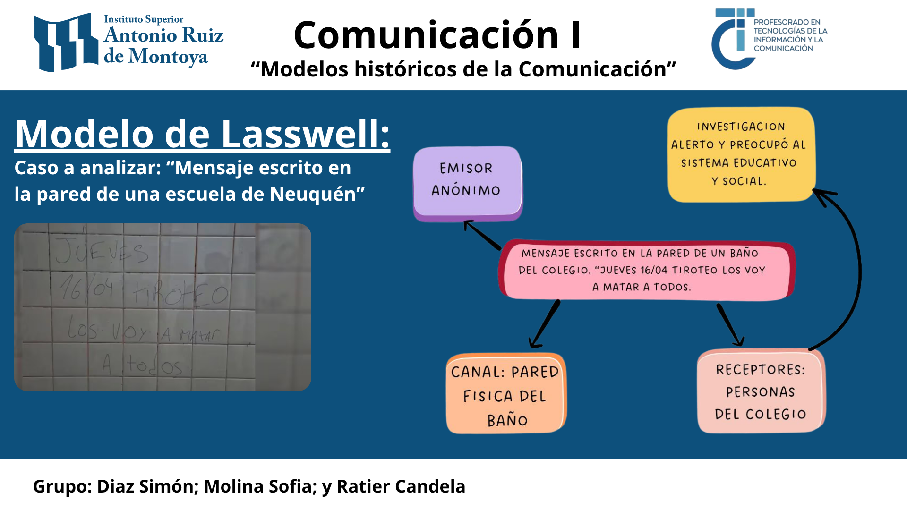

Análisis de una situación comunicativa mediante el Modelo de Lasswell

Área: Formación General
Asignatura: Comunicación I
Fecha: Abril 2026
Como parte de las actividades correspondientes al Eje 1 de Comunicación I, dedicado a la conceptualización de la comunicación y al estudio de los modelos históricos, realizamos un trabajo grupal de aplicación del Modelo de Harold D. Lasswell.
La propuesta consistió en seleccionar una situación comunicativa real y analizarla identificando cada uno de los elementos que conforman el proceso de comunicación según este modelo. Para ello, nuestro grupo tomó como caso de estudio un mensaje amenazante escrito en la pared de un baño de una institución educativa de la provincia de Neuquén, un hecho que tuvo repercusión pública y permitió observar cómo un modelo teórico puede utilizarse para comprender situaciones concretas.
Es una de las fórmulas clásicas más influyentes para el estudio del acto de comunicación. Propone describir el proceso respondiendo a cinco interrogantes: ¿Quién dice qué, por cuál canal, a quién y con qué efecto?
El análisis se organizó a partir de las cinco preguntas planteadas por Lasswell:
- ¿Quién comunica? Identificamos un emisor anónimo cuya autoría no se pudo determinar inicialmente.
- ¿Qué comunica? Un mensaje escrito en aerosol con un tono amenazante y violento.
- ¿Por qué canal? El canal físico e informal representado por la pared de la institución escolar.
- ¿A quién? Principalmente a los estudiantes, docentes y directivos del establecimiento (la comunidad educativa).
- ¿Con qué efecto? Generó alarma social, suspensión preventiva de clases y la intervención policial y judicial.
Evidencia de la actividad
Durante la clase presencial, estructuramos y presentamos las conclusiones de este análisis en un recurso compartido.

Pizarra con los apuntes y la división del esquema de Lasswell utilizado durante la actividad presencial.